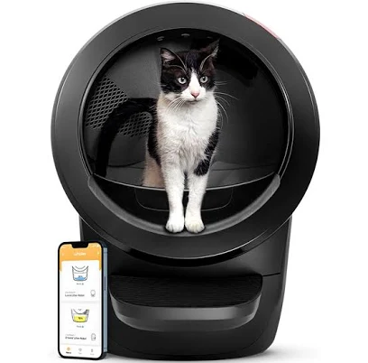

These are all the resources used throughout our website!
Adoption Resources
- Location: 302 South Street, Carrollton, GA 30117
- Phone: (678) 890-1860
- Website: furbabiescatcafe.com
- Description: A cozy cafe where you can enjoy a beverage while interacting with adoptable cats. They have a selection of cat toys and goods available for purchase, and serve as a foster home for cats from the Carroll County Animal Shelter!
- Location: 608 Hwy 29 N, Newnan, GA 30263
- Phone: (770) 683-3156
- Website: nchsrescue.org
- Description: A non-profit organization dedicated to reducing pet euthanasia in Coweta County through rescue, foster programs, and community awareness!

- Location: 251 Automation Drive, Carrollton, GA 30117
- Phone: (770) 214-3590
- Website: carrollcountyga.gov
- Description: A county-run shelter offering adoption services for cats and other animals. They also provide animal control and rescue services.
Food Resources

Open Farm Wild-Caught Salmon Dry Cat Food
- Description: Grain-free dry food made with sustainably sourced wild-caught salmon!
- Price: $63.99
- Where to buy: https://petswarehouse.com

Blue Buffalo Tastefuls Indoor Chicken & Brown Rice
- Description: Formulated for indoor cats, featuring real chicken and wholesome grains!
- Price: $20.98
- Where to buy: https://chuckanddons.com

Tender & True Organic Chicken & Liver Recipe
- Description: USDA-certified organic dry food with humanely raised chicken!
- Price: $15.99
- Where to buy: https://www.tenderandtruepet.com
Purina ONE Natural High Protein Grain Free
- Description: High-protein formula with real chicken, free from grains!
- Price: $79.98
- Where to buy: https://www.walmart.com

Pet Water Fountain
- Description: A good material water fountain for pets of all sizes! Has a wide bowl so multiple pets can drink at once, and a good filtration system to keep the water clean!
- Price: $33.99
- Where to buy: https://www.walmart.com
Toys/Grooming/Litter Resources

Whisker Litter-Robot 4
- Description: An advanced self-cleaning litter box with Wi-Fi connectivity and app control, making maintenance effortless!
- Price: $699.99
- Where to buy: https://www.litter-robot.com

Van Ness Giant High-Sides Cat Litter Pan
- Description: A budget-friendly option with high sides to reduce litter scatter, ideal for larger cats!
- Price: $16.99
- Where to buy: https://www.thefamilypet.store
Wicked Ball M3
- Description: An upgraded interactive toy that rolls, bounces, and lights up to keep your cat engaged. It features smart modes and alerts you when it's stuck or low on battery!
- Price: $34.99
- Where to buy: https://www.cheerble.com

Yeowww! Catnip Banana
- Description: A fan-favorite, this toy is packed with potent catnip and has a durable design that cats love to bite and kick!
- Price: $10.99
- Where to buy: https://www.jacksongalaxy.com

SPEEDY TAIL 2.0
- Description: This touch-activated toy moves unpredictably, stimulating your cat's hunting instincts and keeping them entertained!
- Price: $24.99
- Where to buy: https://www.teazys.com
Hertzko Self Cleaning Slicker Brush
- Description: Designed for sensitive skin, this brush removes tangles and knots while being gentle on your cat's skin!
- Price: $20.99
- Where to buy: https://www.zeebooth.com
Burt's Bees Double Sided Pin & Bristle Brush
- Description: This eco-friendly brush features a pin side for detangling and a bristle side for smoothing your cat's coat!
- Price: $191.99
- Where to buy: https://www.petspeople.com